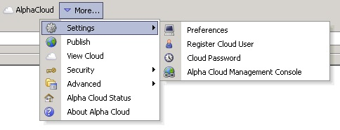

Alpha Cloud - Alpha Anywhere Developer's Guide
The first time you access Alpha Cloud dialogs in Alpha Anywhere that require a password, the Alpha Cloud Preferences dialog (shown below) will be displayed.
You can also open the dialog in the web control panel in Alpha Anywhere by clicking on the Alpha Cloud toolbar icon and selecting "Settings" and then "Preferences" from the drop down menu.

- If your e-mail has not been entered previously, enter your e-mail and your password.
- Select the checkbox entitled "Remember Me", to save your user and password in the registry.
- Click the button entitled "Verify Credentials" to connect to the Alpha Cloud, verify your password and retrieve information about the permissions assigned to you.
- If you have access to more than one subscription or account, you can select the subscription and account you want to manage.
- If you only have a single subscription and account you can choose whether you want to publish using the basic publish dialog or the advanced publish dialog.
This is discussed in more detail in the next sections.